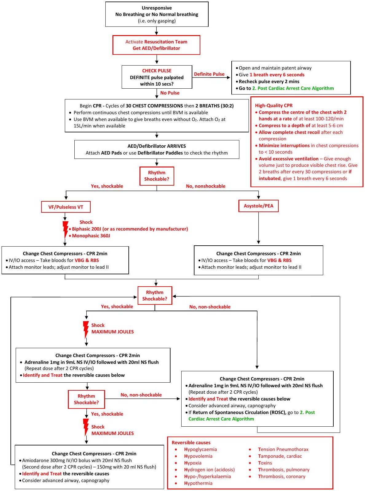
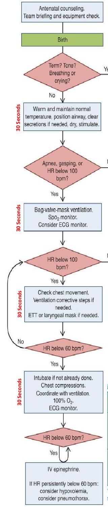

Resuscitation Algorithms
1. Adult Cardiac Arrest Algorithm
This clinical pathway is intended to supplement, rather than substitute for, professional judgment and may be changed depending upon a patient's individual needs. Failure to comply with this pathway does not represent a breach of the standard of care.
2. Post-Cardiac Arrest Care Algorithm
This clinical pathway is intended to supplement, rather than substitute for, professional judgment and may bechanged depending upon a patient's individual needs. Failure to comply with this pathway does not represent a breach of the standard of care.
- Activate Resuscitation Team (if not already present)
- Monitor, support ABCs. Be prepared to provide CPR and defibrillation
- Check vital signs (BP, PR, RR, SPO2, T °C, RBS)
Optimize Ventilation and Oxygenation
- Consider an advanced airway and waveform capnography
- Avoid excessive ventilation.
- Start at 10-12 breaths/min (1 breath every 6 seconds)
- Titrate FiO2 to minimum necessary to maintain SPO2 94% - 98%. DO NOT aim for 100%
- Titrate to target PETCO2 of 35-45 mmHg
Treat Hypotension (SBP <100 mmHg / MAP <65 mmHg)
- IV/IO Bolus (if not contraindicated e.g. pulmonary oedema, renal failure): 1-2 L Ringer's Lactate/Hartmann's Solution
- Vasopressor infusion if NO response to fluid bolus or if fluid bolus contraindicated:
- Adrenaline IV Infusion: 0.1-0.5 µg/kg/min (7-35 µg/min in 70-kg adult)
- Norepinephrine IV Infusion: 0.1-0.5 µg/kg/min (7-35 µg/min in 70-kg adult)
- Target MAP to achieve adequate urine output (>0.5 mL/kg/hr) and normal or decreasing lactate
- Get a 12-lead ECG immediately if likely cardiac cause. If STEMI, Unstable Cardiogenic Shock or Mechanical Circulatory Support is required - Consult an Interventional Cardiologist
- Identify and Treat reversible causes
- Hypoglycaemia
- Hypovolemia
- Hypoxia
- Hydrogen ion (acidosis)
- Hypo-/hyperkalaemia
- Hypothermia
- Tension Pneumothorax
- Tamponade, cardiac
- Toxins
- Thrombosis, pulmonary
- Thrombosis, coronary
- If patient is stable, transfer to Critical Care Unit (ICU/CCU) attached to a defibrillator
- Target normothermia and avoid fever(>37.7° C) for atleast 72 hours after ROSC.
3. Maternal Cardiac Arrest Algorithm
This clinical pathway is intended to supplement, rather than substitute for, professional judgment and may be changed depending upon a patient's individual needs. Failure to comply with this pathway does not represent a breach of the standard of care.
FIRST RESPONDER
- Activate Resuscitation Team (if not already present) AND OBGYN
- Document time of onset of maternal cardiac arrest
- Place the patient supine and perform a left uterine displacement (LUD) with as below.
- Start resuscitation as per the 1. Adult Cardiac Arrest Algorithm; place hands slightly higher on the sternum than usual
SUBSEQUENT RESPONDERS
Maternal Interventions
Treat as per 1. Adult Cardiac Arrest Algorithm
- Do not delay defibrillation
- Give typical ACLS drugs and doses
- Ventilate with 100% oxygen
- Monitor wave form capnography and CPR quality
- Provide post-cardiac arrest care as appropriate. See 2. Post-Cardiac Arrest Care Algorithm
Maternal Modifications
- Start IV access above the diaphragm
- Assess for hypovolaemia and give fluid bolus when required
- Anticipate difficult airway; experienced provider preferred for advanced airway placement
- If patient receiving IV/IO magnesium prearrest, stop magnesium and give IV/IO calcium chloride 10 mL in 10% solution, or calcium gluconate 30 mL in 10% solution
- Continue all maternal resuscitative interventions (CPR, positioning, defibrillation, drugs, and fluids) during and after caesarean section
Obstetric Interventions for Patient with an Obviously Gravid Uterus*
- Perform manual uterine displacement (LUD) displace uterus to the patient's left to relieve aortocaval compression
- Remove both internal and external foetal monitors if present
*An obviously gravid uterus is a uterus that is deemed clinically to be sufficiently large to cause aortocaval compression
Obstetric and neonatal teams should immediately prepare for possible emergency caesarean section if the pregnancy is determined to be viable
- If no ROSC by 4 minutes of resuscitative efforts, consider performing immediate emergency caesarean section
- Aim for delivery within 5 minutes of onset of resuscitative efforts
Potential Aetiology of Maternal Cardiac Arrest
- Anaesthetic complications
- Bleeding: DIC, Uterine atony, Placenta abruption/previa
- Cardiac disease (MI/ischaemia/aortic dissection/cardiomyopathy)
- Drugs
- Embolism: coronary/pulmonary/amniotic fluid embolism
- Fever (Sepsis)
- General non-obstetric causes of cardiac arrest (H's and T's)
- Hypertension/preeclampsia/eclampsia
4. Neonatal Resuscitation Algorithm
This clinical pathway is intended to supplement, rather than substitute for, professional judgment and may be changed depending upon a patient's individual needs. Failure to comply with this pathway does not represent a breach of the standard of care.
The most important and effective action in neonatal resuscitation is ventilation of the baby's lungs.
*Note: Endotracheal dose may not result in effective plasma concentration of drug, so vascular access should be established as soon as possible. Drugs given endotracheally require higher dosing than when given IV.